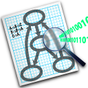

前几天在写 使用 Emacs 与 Org mode 进行 GTD 管理 博客时，用到了 Graphviz 绘制流程 图。正巧之前在 LaTeX 中也用它画过一些图，但都没有系统地入过门，那就趁最近学习一 下吧。
从官网上可以看到，Graphviz 的全称为图可视化 工具，这里的图说的应该不是数学意 义上的函数图像那种图，而是数据结构中的图，强调的关系。
安装
Graphviz
Graphviz 本质上是一个命令行工具，在 Archlinux 上只需要通过 sudo pacman -S
graphviz 安装即可，其他系统类似。
graphviz-dot-mode
Graphviz 在 Emacs 中的集成是通过 graphviz-dot-mode 这个包来实现的，只需要 <M-x>
package-install graphviz-dot-mode <RET> 即可。
然后在 Emacs 配置中加入以下内容来启用
1 (use-package graphviz-dot-mode 2 :ensure t 3 :config 4 (setq graphviz-dot-indent-width 4)) 5 6 (use-package company-graphviz-dot)
布局器
Graphviz 中包含了众多的布局器：
- dot 默认布局方式，主要用于有向图
- neato 基于 spring-model（又称 force-based）算法
- twopi 径向布局
- circo 圆环布局
- fdp 用于无向图
基本使用
Graphviz 构建组件为图，节点，边，用属性对其进行描述。
创建一个 dot 布局的图，可以使用以下代码
1 digraph first{ 2 a; 3 b; 4 c; 5 d; 6 a->b; 7 b->d; 8 c->d; 9 }

上述代码等价于
1 digraph first{ 2 a->b; 3 b->d; 4 c->d; 5 }
如果要直接在命令行进行绘图，使用命令 =dot -Tpng first.dot -o first.png=。如果利 用 Emacs Babel 进行绘制，需要如下所示的 Headers。
1 #+begin_src dot :file first.png :cmdline -Tpng :results silent 2 digraph first{ 3 a->b; 4 b->d; 5 c->d; 6 } 7 #+end_src
其中，=:results silent= 表示不在 Org 文件中进行任何输出。
绘制属性
一个图中可能有非常多的节点与边，如果每次都需要声明一个节点的属性会非常麻烦。类似
于面向对象编程的思想，我们可以用 node 和 edge 类标签来设置全局的属性，也可以用对
象标签设置单个节点与边的属性。
1 digraph G{ 2 // 设置图片最大尺寸 3 size = "40, 40"; 4 // 设置节点排布方向 5 rankdir = LR; 6 // 设置节点字体 7 node[fontname="SimHei"]; 8 // 设置连线字体 9 edge[fontname="SimHei"]; 10 11 // 设置默认节点属性 12 node[shape=box, color=blue, style=unfilled]; 13 // 设置边的属性 14 edge[color=red]; 15 16 // 节点 17 小蓝; 18 小红[color=red]; 19 // 边 20 小蓝->小红; // 默认边属性 21 小红->小蓝[color=blue, style=dashed]; // 自定义边属性 22 }
所有可用的属性见 官网，此处列举部分常用的属性
- charset 编码，一般设置 UTF-8
- fontname 字体名称，这个在中文的情况需要设置，否则导出图片的时候会乱码，一般设 置微软雅黑("Microsoft YaHei"), linux 下也是同样设置系统带的字体就好，其他字体 设置见fontpath 属性
- fontcolor 字体颜色
- fontsize 字体大小，用于文本内容
- fillcolor 用于填充节点或者集群(cluster)的背景颜色。
- size 图形的最大宽度和高度
- label 图形上的文本标记
- margin 设置图形的边距
- pad 指定将绘制区域扩展到绘制图形所需的最小区域的长度（以英寸为单位）
style 设置图形组件的样式信息。 对于聚类子图或者节点，如果 style = filled，则 填充聚类框的背景
rankdir 设置图形布局的排列方向 (全局只有一个生效). "TB", "LR", "BT", "RL", 分 别对应于从上到下，从左到右，从下到上和从右到左绘制的有向图。
1 digraph { 2 rankdir = RL; 3 A->B->C[color=green]; 4 A->C[label="RL"]; 5 }
- ranksep 以英寸为单位提供所需的排列间隔
- ratio 设置生成图片的纵横比
节点
节点的默认属性为 shape = ellipse, width = .75, height = 0.5 并且用节点标识符作为 节点的显示文字。
如 图 1 中所示，声明两个节点 小蓝 和 小红/，/小蓝 或 小红 就表示这个节点的节点标
识符，后面紧跟的是该节点的属性列表；另一种用法为 节点标识符:节点部分:方向[属性列
表] 小蓝:body[style=filled color=lightblue], 这个为单一节点声明的方式。
节点中的基本属性有
- shape 形状，全部形状见 Graphviz 官网，一些常用的图形有 box, circle, ellipse, plaintext, square
- width height, 图形的宽度和高度，如果设置了 fixedsize 为 true，则宽和高为最终的 长度
- fixedsize 如果为false，节点的大小由其文本内容所需要的最小值决定
- rank 子图中节点上的排列等级约束. 最小等级是最顶部或最左侧，最大等级是最底部或
最右侧。
- same. 所有节点都位于同一等级
- min. 所有节点都位于最小等级上
- source. 所有节点都位于最小等级上，并且最小等级上的唯一节点属于某个等级 source 或 min 的子图
- max sink. 和上类似
边
有向图中的的边用 -> 表示，无向图用 -- 表示。
可以同时连接多个节点或者子图，但是只能有一个属性列表，如下
1 digraph { 2 rankdir = LR 3 A -> B -> c[color=green] 4 }

一些关于边的属性如下：
- len 首选边的长度
weight 边的权重, 权重越大越接近边的长度
如果我们希望图中的绿色边为主要逻辑分支，需要设置
A->B->C->D->F的权重最大，修改 绿色的分支的权重为 100，使其变成主要逻辑分支，修改后的效果如下1 digraph { 2 rankdir = LR 3 splines = ortho 4 5 A -> B -> C -> D -> F [color=green, weight=100] 6 E -> F -> B -> D [color=blue] 7 B -> E -> H[color=red] 8 }
- lhead 逻辑边缘的头部(箭头那个位置)，compound 设置为 true 时，边被裁减到子图的边界处
- ltail 类似 lhead
- headlabel 边上靠近箭头部分的标签
- taillabel 边上靠近尾部部分的标签
- splines 控制如何显示边，取值可以是
none 或者 "", 无边
1 digraph { 2 rankdir = LR 3 splines = none 4 5 A -> B -> C -> D -> F [color=green] 6 E -> F -> B -> D [color=blue] 7 B -> E -> H[color=red] 8 }

true 或者 spline, 样条线（无规则，可为直或者曲线）
1 digraph { 2 rankdir = LR 3 splines = spline 4 5 A -> B -> C -> D -> F [color=green] 6 E -> F -> B -> D [color=blue] 7 B -> E -> H[color=red] 8 }

false 或者 line, 直线
1 digraph { 2 rankdir = LR 3 splines = line 4 5 A -> B -> C -> D -> F [color=green] 6 E -> F -> B -> D [color=blue] 7 B -> E -> H[color=red] 8 }

polyline, 折线
1 digraph { 2 rankdir = LR 3 splines = polyline 4 5 A -> B -> C -> D -> F [color=green] 6 E -> F -> B -> D [color=blue] 7 B -> E -> H[color=red] 8 }

curved, 曲弧线，看起来像贝塞尔曲线
1 digraph { 2 rankdir = LR 3 splines = curved 4 5 A -> B -> C -> D -> F [color=green] 6 E -> F -> B -> D [color=blue] 7 B -> E -> H[color=red] 8 }

ortho, 正交折线
1 digraph { 2 rankdir = LR 3 splines = ortho 4 5 A -> B -> C -> D -> F [color=green] 6 E -> F -> B -> D [color=blue] 7 B -> E -> H[color=red] 8 }

边的方向
示例 声明多部分节点，以及对各部分进行单独设置
1 node0 [label = "<postid1> string|<postid2> string|<postid3> string3", height=.5]; 2 node0:head[color=lightblue];
1 digraph action { 2 node [shape = record,height=.1]; 3 4 node0 [label = "<head> head|<body> body|<foot> foot", height=.5] 5 node2 [shape = box label="mind"] 6 7 node0:head:n -> node2:n [label = "n"] 8 node0:head:ne -> node2:ne [label = "ne"] 9 node0:head:e -> node2:e [label = "e"] 10 node0:head:se -> node2:se [label = "se"] 11 node0:head:s -> node2:s [label = "s"] 12 node0:head:sw -> node2:sw [label = "sw"] 13 node0:head:w -> node2:w [label = "w"] 14 node0:head:nw -> node2:nw [label = "nw"] 15 node0:head:c -> node2:c [label = "c"] // center，中间 16 node0:head:_ -> node2:_ [label = "_"] // 任意 17 18 node0:body[style=filled color=lightblue] 19 }
子图
subgraph 必须配合 cluster 一起使用，用法为 =subgraph cluster* {} 。
需要设置 compound 为 true，则在群集之间留出边缘，子图的边界关系在 边 的定义中有给出，这里直接给个示例。
1 digraph G { 2 compound = true // 允许子图间存在边 3 ranksep = 1 4 node [shape = record] 5 6 subgraph cluster_hardware { 7 label = "hardware" 8 color = lightblue 9 CPU Memory 10 } 11 12 subgraph cluster_kernel { 13 label = "kernel" 14 color = green 15 Init IPC 16 } 17 18 subgraph cluster_libc { 19 label = "libc" 20 color = yellow 21 glibc 22 } 23 24 CPU -> Init [lhead = cluster_kernel ltail = cluster_hardware] 25 IPC -> glibc [lhead = cluster_libc ltail = cluster_kernel] 26 }